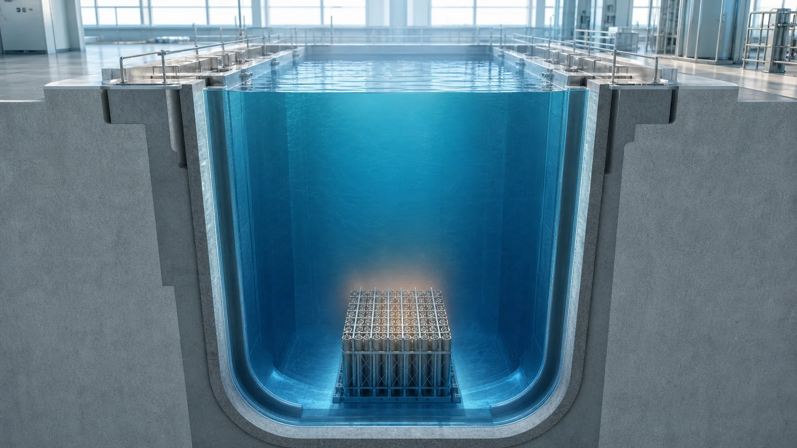
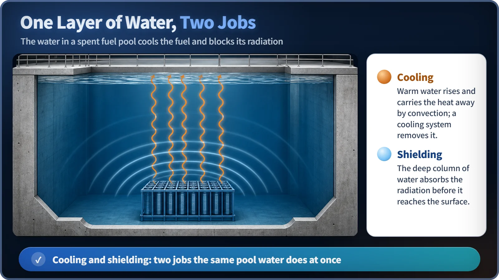
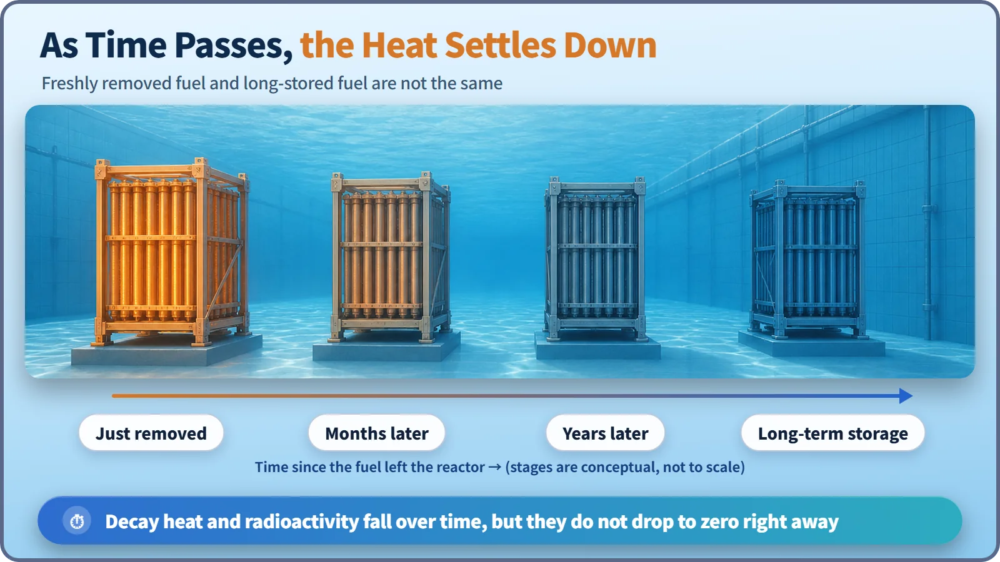

Reactor Components · 072
Not a Dead Battery — Why a Spent Fuel Pool Keeps Used Fuel Underwater for Years
Spent fuel keeps producing heat and radiation. A deep pool of water cools it and shields it at the same time, for years.

Spent fuel is not switched off when it leaves the reactor: it keeps producing decay heat and strong radiation. A spent fuel pool keeps it under a deep layer of water for years, and that one body of water does two jobs at once: it carries the heat away and it shields the radiation.
A red-hot rock at the bottom of the deep end
Let's start with a picture. Imagine the deep end of a public swimming pool. Now imagine someone has lowered a rock to the very bottom, a rock that was just pulled out of a fire and is still glowing red.
That rock has two problems at once. First, it is hot. Second, it gives off a strong, invisible kind of light (let's call it radiation). Remarkably, if the pool is simply filled deep enough with water, both problems are solved together. Water keeps flowing around the rock and carrying its heat away, so the rock slowly cools. And because a thick layer of water sits above it, the "light" coming from the rock gets weaker and weaker as it passes through the water, until near the surface it is low enough for people to be there safely. That is exactly what a real spent fuel pool does.

One body of water, two jobs: cooling and blocking
To put names to it: a nuclear fuel assembly that has finished its time in the reactor and been taken out is called spent fuel. A facility that stores this spent fuel submerged in a deep, water-filled basin is a spent fuel pool. Storing fuel in water like this is called wet storage, and the water does exactly two jobs.
The first job is cooling. Spent fuel is not completely "switched off" when it leaves the reactor. The many substances created during fission keep undergoing radioactive decay, and that decay produces heat. The pool has its own cooling and cleanup system that keeps removing this heat: it circulates the water and sends the heat outside through a heat exchanger. Roughly speaking, the heat the water carries away is proportional to how much water is circulated and how much its temperature rises. No hard math is needed here. It's the common-sense idea that the more water you move, and the more often, the more heat you take away.
The second job is radiation shielding. Spent fuel isn't just hot; it also gives off strong radiation such as gamma rays and neutrons. Water is packed with hydrogen atoms, which makes it a very effective material for slowing down and absorbing this radiation. If a thick enough column of water is kept between the top of the fuel and the surface, the radiation loses strength as it travels through all that water, and near the surface it drops to a level where workers can safely approach. It is the same principle as the rock's "light" fading on its way up to the surface of the pool.
So why years, exactly?
A natural question follows: "Won't it cool down and become less radioactive eventually anyway?" Yes, it will. The problem is the speed. Decay heat and radioactivity do decrease over time, but they drop quickly at first and then the rate of decrease itself slows down. So reaching the point where you can say "it's cooled enough and its radioactivity is low enough" takes not a day or two, but quite a long time. That's why spent fuel is kept in the pool for several years, cooled and shielded the whole time. Once its heat and radioactivity are low enough, some plants move it to dry storage (cask storage), where it is cooled by air.
There is one misconception worth stopping for: the idea that "it's used up, so it can just be cleared away like ordinary waste." That's not true. Spent fuel is still a material with strong radioactivity and heat, and it is a specially controlled material that is counted and monitored item by item under international standards such as those of the International Atomic Energy Agency (IAEA). How to handle it in the future, whether to recycle it or dispose of it as it is, is a matter of national policy that differs from country to country, so this post won't say which is right. But "used up" is a very different thing from "not dangerous" or "can be handled any old way," and that much should be clear.
Easy mix-ups
Pool water is not the same as reactor coolant. The coolant that cools the fuel inside the reactor and the water that cools spent fuel in the pool are both water, but they belong to different systems with different roles. Reactor coolant concentrates on cooling the operating core, while the pool water cools the decay heat of fuel that has already been removed and, at the same time, provides radiation shielding.
The pool is not a final disposal site. The pool is strictly an interim (temporary) storage stage. It is a different idea from final disposal, in which radioactive waste is permanently placed deep underground. Dry storage, mentioned above, is likewise just another interim storage method that comes after the pool.

Today in four lines
- A spent fuel pool is a wet-storage facility that keeps spent fuel taken out of the reactor submerged in water.
- The water does two jobs at once: cooling that keeps removing decay heat, and shielding that weakens the radiation.
- Because decay heat and radioactivity decrease only gradually, the fuel needs several years of care in the pool.
- Spent fuel is not throwaway waste. It is a special material that remains under strict control.
Like the rock at the bottom of the deep end, a used fuel rod takes time to cool and weaken. The spent fuel pool is the place that carries it safely through that time.